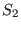
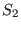
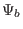
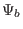

Next: Radial coordinate to be Up: Misc contents Previous: Discussion about the poloidal
(In practice, I choose the positive direction of  and
and  along the
direction of toroidal and poloidal magnetic field (i.e.,
and
are always positive in
along the
direction of toroidal and poloidal magnetic field (i.e.,
and
are always positive in
 coordinates system). Then, the
defined by Eq. (178) is always positive. It follows that
should be also positive. Next, let us examine whether this
property is correctly preserved by Eq. (183). Case 1: The radial
coordinate
coordinates system). Then, the
defined by Eq. (178) is always positive. It follows that
should be also positive. Next, let us examine whether this
property is correctly preserved by Eq. (183). Case 1: The radial
coordinate  is chosen as
. Then the
factor before the integration in Eq. (183) is negative. We can
further verify that
is chosen as
. Then the
factor before the integration in Eq. (183) is negative. We can
further verify that
 is always negative for either the case that
is always negative for either the case that
 is pointing inward or outward. Therefore the .r.h.s. of Eq.
(183) is always positive for this case. Case 2: The radial
coordinate
is pointing inward or outward. Therefore the .r.h.s. of Eq.
(183) is always positive for this case. Case 2: The radial
coordinate  is chosen as
. Then the
factor before the integration in Eq. (183) is positive. We can
further verify that
is chosen as
. Then the
factor before the integration in Eq. (183) is positive. We can
further verify that
 is always positive for either the case that
is always positive for either the case that
 is pointing inward or outward. The above two cases include all
possibilities. Therefore, the positivity of
is always
guaranteed)
is pointing inward or outward. The above two cases include all
possibilities. Therefore, the positivity of
is always
guaranteed)
a magnetic surface forms a central hole around  axis. Using Gauss's
theorem in the volume within the central hole, and noting that no magnetic
field line point-intersects a magnetic surface, we know that the magnetic flux
through any cross section of the hole is equal to each other. Next we
calculate this magnetic flux. To make the calculation easy, we select a plane
cross section perpendicular to the
axis. Using Gauss's
theorem in the volume within the central hole, and noting that no magnetic
field line point-intersects a magnetic surface, we know that the magnetic flux
through any cross section of the hole is equal to each other. Next we
calculate this magnetic flux. To make the calculation easy, we select a plane
cross section perpendicular to the  axis, as is shown by the dash line in
Fig. 1. In this case, only
axis, as is shown by the dash line in
Fig. 1. In this case, only  contribute to the magnetic flux,
which is written (the positive direction of the cross section is chosen in the
direction of
)
contribute to the magnetic flux,
which is written (the positive direction of the cross section is chosen in the
direction of
)
be generalized to any revolution surface that is generated by rotating a curve
segment on the poloidal plane around  axis. For instance, a curve on the
poloidal plane that connects the magnetic axis and a point on a flux surface
can form a toroidal surface (e.g., surface  in Fig. 53). The
magnetic flux through the toroidal surface is given by
axis. For instance, a curve on the
poloidal plane that connects the magnetic axis and a point on a flux surface
can form a toroidal surface (e.g., surface  in Fig. 53). The
magnetic flux through the toroidal surface is given by
i.e.
| (531) |
The magnetic surface forms a central hole around  axis. The magnetic flux
through any cross section of the central hole is equal to each other and is
given by
, where
axis. The magnetic flux
through any cross section of the central hole is equal to each other and is
given by
, where  and  are
the value of
and  are
the value of  at the
at the  axis and the magnetic surface, respectively.
axis and the magnetic surface, respectively.
The conclusion in Eq. (530) can be generalized to any revolution
surface that is generated by rotating a curve on the poloidal plane about  axis. For instance, a curve on the poloidal plane that connects the magnetic
axis and a point on a flux surface can form a toroidal surface (e.g., surface
in Fig. 53).
axis. For instance, a curve on the poloidal plane that connects the magnetic
axis and a point on a flux surface can form a toroidal surface (e.g., surface
in Fig. 53).
Also note the difference between  and
and
 defined in Sec.
1.4:
defined in Sec.
1.4:
 is the magnetic flux through the central hole of a
torus and thus includes the flux in the center transformer, and
is the magnetic flux through the central hole of a
torus and thus includes the flux in the center transformer, and  is
the magnetic flux through the ribbon between the magnetic axis and the
magnetic surface.
is
the magnetic flux through the ribbon between the magnetic axis and the
magnetic surface.
yj 2018-03-09